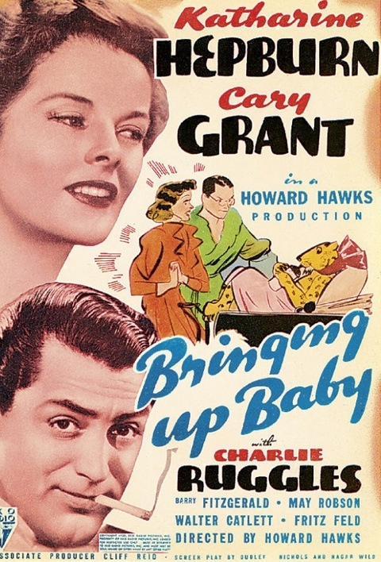

Zoé Cadé
Baby programmer
After working as a product owner, I want to be the one making the magic happens.
My favorite movies
|  |
Bringing Up Baby, 1938While trying to secure a $1 million donation for his museum, a befuddled paleontologist is pursued by a flighty and often irritating heiress and her pet leopard, Baby. |
Pierrot le fou, 1965Pierrot escapes his boring society and travels from Paris to the Mediterranean Sea with Marianne, a girl chased by hit-men from Algeria. They lead an unorthodox life, always on the run. |
|
Scott Pilgrim vs. the World, 2010Scott Pilgrim must defeat his new girlfriend's seven evil exes in order to win her heart. |